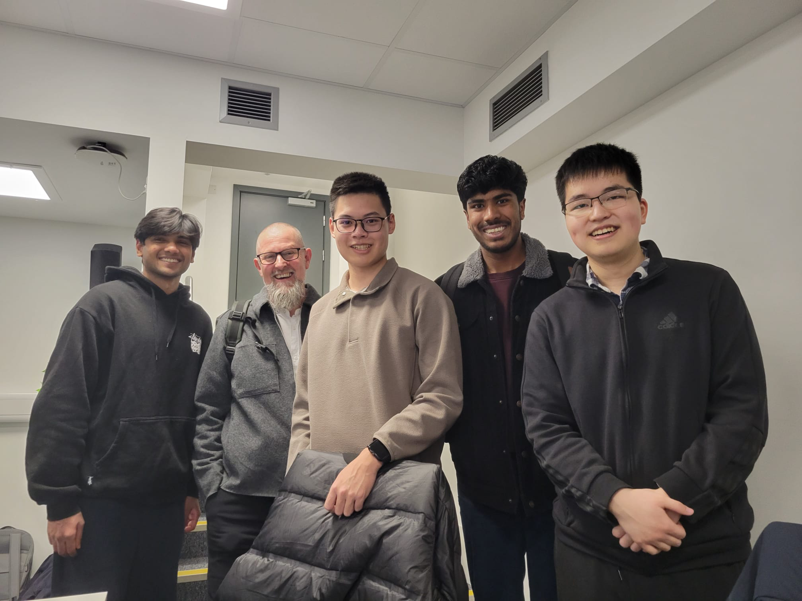

MoSCoW achievement table
Phase1
| ID | Requirement | Priority | State | Contributors |
|---|---|---|---|---|
| 1 | Have working GUI with AI response and textbox to enter keywords or prompt text | Must | Yes | Nigel, Haocheng |
| 2 | Be able to extract text from PDFs | Must | Yes | Nigel |
| 3 | Generate a suitable response using an offline LLM | Must | Yes | Nigel, Neethesh, Haocheng, Zizhou |
| 4 | Use RAG and vector database to search documents | Must | Yes | Neethesh, Haocheng, Zizhou |
| 5 | Chunk texts for easy retrieval and more understandable responses | Should | Yes | Nigel |
| 6 | Add support to choose from files or folders | Should | Yes | Nigel |
| 7 | Save history of previous responses | Should | Yes | Haocheng |
| 8 | Add support for Word documents | Could | Yes | Haocheng |
| 9 | Add support for Markdown files | Could | Yes | Haocheng |
| 10 | Add support for multi-column documents | Could | Yes | Nigel, Neethesh |
| 11 | Allow for Do-Not-Include items | Could | Yes | Haocheng |
| 12 | Filters and option to sort | Could | Yes | Haocheng |
| 13 | Be able to link to similar online resources/OneDrive for further study | Could | Partial (able to extract from OneDrive if already logged in on the system and download button is clicked) | Haocheng, Nigel, Zizhou, Neethesh |
| 14 | Add support for queries regarding images in documents | Could | No | - |
| 15 | Add build-in helper page | Could | Yes | Haocheng |
| Key Functionalities (Must and Should): | 100% | |||
| Optional Functionalities (Could): | 81% | |||
Phase2
| ID | Requirement | Priority | State | Contributors |
|---|---|---|---|---|
| 1 | Speech To Text working locally in browser | Must | Yes | Haocheng |
| 2 | Text To Speech working locally in browser | Must | Yes | Neethesh, Nigel |
| 3 | Use offline LLM to generate possible keywords | Must | Yes | Zizhou |
| 4 | Allow users to choose between offline/online models and STT models | Must | Yes | Nigel |
| 5 | Have suitable expression | Should | Yes | Nigel, Neethesh, Haocheng, Zizhou |
| 6 | Ensure that the LLM generates a wide array of responses based on mood | Should | Yes | Zizhou |
| 7 | Diarisation to discern between multiple speakers** | Could | Yes | Haocheng |
| 8 | Allow user to upload voice clips for voice cloning in the user’s own voice | Could | Partially (We are able to do the cloning of the voice by creating an embedding however, this is done using a python script rather than on the client side as per the initial requirements) | Nigel, Neethesh |
| 9 | Support real-time speech-to-text using Whisper with finalization for larger models** | Could* | Yes | Haocheng |
| Key Functionalities (Must and Should): | 100% | |||
| Optional Functionalities (Could): | 83% | |||
* (Not in MoSCoW document but preferred by client as a research feature)
** (More research than feature; client does not expect them in the main branch)
Non-Functional Requirements (Both)
| ID | Requirement | Priority | State | Contributors |
|---|---|---|---|---|
| 10 | Be easily usable for patients | Must | Yes | All |
| 11 | Be easily perceivable and maintainable for future development | Must | Yes | All |
| 12 | Have minimal latency or wait times while using the app | Should | Yes | All |
| 13 | Compile Windows exe(phase1) | Should | Yes | All |
| 14 | Compile MacOS exec(phase1) | Could | Yes | All |
Known Bug List
In this project, our team members use GitHub to update the project and fix bugs. Once a bug is discovered, a team member is assigned to identify the issue and find a solution. As a result, we have fixed almost all bugs that would seriously impact the user experience.
In the end, only two bugs remained unfixed:
| ID | Which Part | Known Bug | Priority |
|---|---|---|---|
| 1 | Phase 1 | The software is slow when handle uploading more than ten files at a time | Low |
| 2 | Phase 2 | For LLMs with size smaller than 1b, they may fail to output a vaild json answer | Low |
Bugfix commit on our GitHub project
Individual contribution distribution table for Phase1
| Work Packages | Haocheng,Xu | Mathews, Nigel | Neethesh, Neethesh | Zizhou, Shi |
|---|---|---|---|---|
| UI Design | 50% | 50% | 0% | 0% |
| LLM | 30% | 20% | 20% | 30% |
| Database | 25% | 10% | 40% | 25% |
| Testing | 40% | 20% | 20% | 20% |
| Overall | 25% | 25% | 25% | 25% |
Individual contribution distribution table for Phase2
| Work Packages | Haocheng,Xu | Mathews, Nigel | Neethesh, Neethesh | Zizhou, Shi |
|---|---|---|---|---|
| UI Design | 15% | 70% | 0% | 15% |
| LLM | 0% | 0% | 0% | 100% |
| Text-To-Speech | 0% | 15% | 85% | 0% |
| Speech-To-Text | 100% | 0% | 0% | 0% |
| Testing | 40% | 20% | 20% | 20% |
| Overall | 25% | 25% | 25% | 25% |
Individual contribution distribution table for website
| Work Packages | Haocheng,Xu | Mathews, Nigel | Neethesh, Neethesh | Zizhou, Shi |
|---|---|---|---|---|
| Home page | 0% | 100% | 0% | 0% |
| Requirement | 10% | 80% | 10% | 0% |
| Research | 20% | 20% | 20% | 40% |
| System Design | 0% | 0% | 100% | 0% |
| Implementation | 0% | 0% | 100% | 0% |
| UI Design | 50% | 50% | 0% | 0% |
| Testing | 100% | 0% | 0% | 0% |
| Evaluation | 0% | 0% | 0% | 100% |
| User Mannual | 100% | 0% | 0% | 0% |
| GDPR & Privacy | 100% | 0% | 0% | 0% |
| Development Blog | 0% | 100% | 0% | 0% |
| Monthly Videos | 25% | 25% | 25% | 25% |
| Overall | 25% | 25% | 25% | 25% |
Note: Each task is not weighted equally, and as such the overall contribution numbers may not add up to the exact overall values.
Critical Evaulation
Project management
Throughout all stages of the project, we used GitHub to update code and fix bugs. At the same time, we held weekly meetings with our client to provide progress updates. We also had a clear timeline, outlining the tasks we needed to complete each week.
In addition to coding, we regularly updated our research finding on the notion, sharing them to teammates and our client. These measures effectively helped us manage the project's progress, ensuring that we did not encounter any management issues until the end of the project.
Functionality
In our Phase 1 project, users could upload PDF, DOCX, and Markdown (MD) files, covering the most common data types. Additionally, users could ask questions via the input box using their keyboard and add negative prompts to filter responses.
In Phase 2, we introduced multiple input methods, including voice input and text input. Users could also modify responses in various ways, such as selecting keywords and adjusting the tone of the answers.
Overall, I believe we successfully implemented the planned functionality.
Stability
We out great effort on the stability of our software. Throughout the project, we conducted tests to ensure that all softwares' functionalities worked properly.
Additionally, we implemented various backup plans, such as regenerating responses when the answer did not match the requirements. These measures ensured that our software could run stably.
Efficiency
To ensure that our product is compatible with most users' device, we adopted the most cost-effective plan in both model and solution selection.
For example, we chose the model that performed best under the lowest requirements as our final solution and used quantized version to minimize memory usage. Additionally, we use a specialized embedding model to handle data embedding task, ensuring that our project achieves optimal performance with minimal resource consumption.
Compatibility
Our project fully takes into account the performance of all users' devices, ensuring that it can run on as many devices as possible. both our Phase 1 and Phase 2 projects offer Windows and Mac versions and support hardware acceleration across all platforms, ensuring that users can run our software smoothly.
In Phase 1, we adopted a combination of a 3B model and a lightweight embedding model, with a total memory requirement of no more than 16GB, ensuring that it could run on most mainstream devices with 16GB of RAM.
In Phase 2, we provided users with three model options: 8B, 3B, and OpenAI API. If the user's device has lower performance, such as a mobile device or an older computer, they can choose to run the 3B model or use OpenAI's API. While if the user's device has better performance and they want better use experience, they can choose the 8B model.
Maintainability
For our project's maintainability, we have structured our code by writing separate functions for different features, making it easier to modify and update specific functionalities without affecting the entire system. This modular approach enhances the readability and scalability of our code.
However, one drawback is that bug fixes and patches were not well managed. Some patches were added without proper documentation or organization, which could lead to difficulties in tracking and maintaining in the long run.
Overall, we think we did a good job in Project maintainability, but we also have some drawback that can be improved in future project.
User experience
During the project showcase day, we demonstrated our demo to many guests and recorded their user experiences and suggestions. Many users were amazed by our product and found it very useful. Of course, we also received some suggestions for improvement.
One particularly valuable suggestion was whether our project could be integrated with visual input devices, such as eye-tracking technology, to help users input their thoughts more quickly. This is especially relevant because our target users typically have mobility disabilities. While our product helps reduce the amount of input required, entering keywords can still be quite challenging for them. This suggestion is very useful and has provided inspiration for our future plans.
picture taken with the guests
Future Work
Integration with Visual Input Devices
One particularly valuable improvement we plan to test is the integration of our project with visual input devices, such as eye-tracking technology. This would allow users to input their thoughts faster. This feature is especially important because our target users often have mobility disabilities, making traditional input methods challenging. While our product already helps reduce the amount of input required, entering keywords can still be difficult for some users. By incorporating visual input technology, we aim to make our product more accessible, efficient, and user-friendly for those who need it most.
Expanding Compatibility Across More Devices
We aim to optimize our project for more devices, particularly mobile devices. This will ensure that users can run the software on a wider range of hardware, improving accessibility and flexibility.
Embedding voice on client side
The initial plan to completely have voice cloning on the client side was hindered by difficulty and complexities in creating a transformers pipeline for the voice embedding models. Hence in the future with more research and knowledge in this field, we plan to integrate the voice embedding to the client side through creating a transformers pipeline.
Third-Party Software Integration
We plan to integrate our project with third-party applications, such as WhatsApp. This will enable users to access and use our software directly within their chat apps, eliminating the need to open a separate application. This seamless integration will enhance user convenience and improve the overall experience.